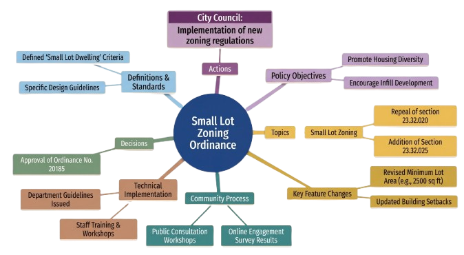

A. Introduction
Meet2Map turns live meeting dialogue into
structured meeting memory during the discussion itself. It
captures speech, generates transcripts, and converts ongoing
conversation into useful summaries for immediate and post-meeting
review. By organizing context live, it helps teams retain
decisions, ownership, and rationale while reducing confusion,
repetition, and post-meeting documentation delays.
Problem: important decisions, action items, and discussion
structure are often lost when teams rely only on manual
note-taking.
B. Contribution
01
Real-time speech transcription with timestamped chunks for
fast meeting capture and clear decision tracking.
02
Local summarization that keeps latency low while preserving
the context and continuity of key discussion points.
03
Mermaid-based mind map generation that converts the final
notes into a visual decision tree for fast understanding.
04
Export-ready meeting outputs that are easy to share, archive,
and reuse after the session ends.
Meet2Map keeps the note-taking loop inside the meeting, so teams
can focus on the discussion instead of rebuilding notes later,
improving alignment during the call and reducing follow-up effort
after the meeting ends.
C. Architecture
Audio is captured continuously, transcribed into rolling chunks,
summarized by a local LLM, and rendered into a visual mind map that
preserves topic flow and decision relationships for clearer
collaboration, traceability, alignment, and faster post-meeting
execution. This layered flow improves robustness, readability,
maintainability, and deployment flexibility.

Flow: live audio in, timestamped transcript out, structured summary
in the middle, and a final meeting map at the end.
D. Results
Results show better recall, less manual documentation, and faster
follow-up review. Summaries plus visual mapping help teams revisit
key decisions without replaying full transcripts.

The final mind map gives teams a compact way to revisit decisions,
owners, and topic branches quickly during handoffs and planning.
E. Conclusion
Meet2Map reduces meeting friction by automating capture,
summarization, and visualization. It preserves context and
converts discussions into clear, structured summaries and
intuitive mind maps. This helps teams quickly understand key
decisions, track action items, and revisit meetings with clarity.
Ultimately, Meet2Map improves collaboration and lets teams focus
more on discussion rather than manual note-taking.
Future work: speaker attribution, cross-meeting search, and
owner-based task tracking.